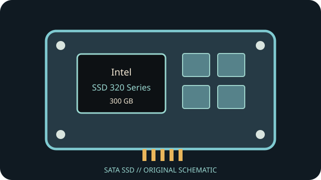

[ INDIVIDUAL COMPONENT // SATA SSD ]
Intel SSD 320 Series 300 GB
Capacity- and part-specific archival record. Performance and construction notes are tied to the cited model documentation; do not generalize them across revisions.

IDENTIFICATION: Match exact part number SSDSA2CW300G3, capacity and revision to the physical label. OEM and regional suffixes can differ.
Specifications
| Manufacturer / model / SKU | Intel SSD 320 Series — SSDSA2CW300G3 |
|---|---|
| Capacity | 300 GB |
| Generation | 2011 client SATA SSD generation |
| Form factor | 2.5-inch |
| SATA generation / interface | SATA 3 Gb/s (SATA II); SATA Revision 2.6 |
| Controller / NAND / performance / endurance | 25 nm Intel MLC NAND; manufacturer-rated sequential transfer up to 270 MB/s read and 205 MB/s write for the 300 GB SKU. Product-family controller is Intel PC29AS21BA0; do not assume an exact board revision from the family name. Intel published a 100 TB total-byte-written endurance rating for this capacity. |
| TRIM / firmware | TRIM support depends on firmware and the operating system/driver path passing ATA Data Set Management. Intel SSD Toolbox and firmware support for this discontinued generation may no longer be available; record existing firmware before any update attempt. |
| Host compatibility | 2.5-inch SATA data and power connectors; SATA 3 Gb/s link. Compatible SATA hosts negotiate down from faster SATA links, but BIOS/AHCI driver support and boot behavior vary by computer. |
Age-related handling & preservation
- Before use, record the label, serial, firmware, SMART health attributes, host/controller and a read-only data/health snapshot; keep verified backups.
- Peak transfer rates and historical endurance ratings do not guarantee remaining life, powered-off retention or recovery after controller failure. Inspect for corrosion, damaged connectors and prior repair.
- Firmware utilities, manuals, warranty coverage and host drivers may be discontinued. Do not update, secure-erase or cross-flash until the full part number/revision and a verified backup are established.
- Check OS TRIM/SMART support directly; bridge, RAID, driver and BIOS behavior can block or alter these features.
Manufacturer / manual sources
- Intel SSD 320 Series product specification (archived manual)Archived Intel product specification/manual; match capacity and full suffix to its tables.
- Intel — SSD 320 Series support archiveManufacturer support archive for firmware, tools and product notes; legacy resources may be retired.
Sources are HTTPS manufacturer product/support pages or product manuals. Match the complete drive label and document revision before applying family-level information to an individual unit.